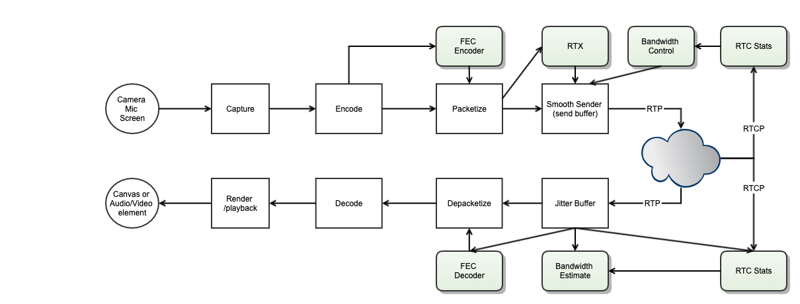

WebRTC 传输概论
概论
WebRTC 进行传输最重要的要搞清楚两点：一是协商媒体传输通道， 二是协商媒体传输参数
协商媒体传输通道是通过 ICE(Interactive Connectivity Establishment) 框架来实现的。
它综合运用了 STUN（Session Traversal Using Relays around NAT） 和 TURN(Traversal Using Relays around NAT) 协议来发现和穿越 NAT，建立端到端的传输通道。
协商媒体传输参数是通过交换 SDP（Session Description Protocol）来实现的
SDP 中包含了媒体编解码器、传输地址、安全参数等关键信息，双方通过 Offer/Answer 模型来协商出一组双方都支持的参数。
WebRTC 的传输层是一个精心设计的协议栈，从底层的 UDP/TCP 传输，到 NAT 穿越，再到安全加密，最后到媒体数据的传输， 每一层都有明确的职责分工。理解这个协议栈的全貌，是深入学习 WebRTC 传输机制的基础。
传输协议栈全景图
WebRTC 的传输协议栈可以从下到上分为以下几层：
┌─────────────────────────────────────────────────────────┐
│ Application Layer 应用层 │
│ Audio / Video / DataChannel Data │
├──────────────┬──────────────────────┬───────────────────┤
│ 媒体传输层 │ RTP / RTCP │ SCTP │
│ │ (Audio & Video) │ (DataChannel) │
├──────────────┴──────────────────────┴───────────────────┤
│ 安全层 Security Layer │
│ SRTP / SRTCP │ DTLS │
├───────────────────────────────┴─────────────────────────┤
│ NAT 穿越层 NAT Traversal Layer │
│ ICE / STUN / TURN │
├─────────────────────────────────────────────────────────┤
│ 传输层 Transport Layer │
│ UDP (主要) / TCP (备选) │
├─────────────────────────────────────────────────────────┤
│ 网络层 Network Layer │
│ IP (IPv4 / IPv6) │
└─────────────────────────────────────────────────────────┘
各层的职责如下：
网络层 (Network Layer): 提供 IP 寻址和路由功能，支持 IPv4 和 IPv6。
传输层 (Transport Layer): 以 UDP 为主要传输协议，TCP 作为 fallback。UDP 的低延迟特性非常适合实时音视频传输。
NAT 穿越层 (NAT Traversal Layer): ICE 框架协调 STUN 和 TURN，实现 NAT 穿越，建立端到端连接。
安全层 (Security Layer): DTLS 用于密钥协商，SRTP/SRTCP 用于媒体数据的加密和认证。
媒体传输层 (Media Transport Layer): RTP/RTCP 承载音视频数据及其控制信息，SCTP 承载 DataChannel 数据。
这种分层设计使得 WebRTC 能够在复杂的网络环境中可靠地传输实时媒体数据，同时保证安全性和低延迟。
协议栈详解
网络层与传输层
WebRTC 的媒体传输以 UDP 为主要传输协议。选择 UDP 的原因在于：
低延迟: UDP 没有 TCP 的三次握手和拥塞控制机制，减少了传输延迟。
无队头阻塞 (No Head-of-Line Blocking): UDP 数据包独立传输，一个包的丢失不会阻塞后续包的接收。
实时性优先: 对于音视频通信，及时性比可靠性更重要。丢失一两个音频帧远比等待重传导致的延迟更可接受。
然而，在某些受限的网络环境中（例如企业防火墙只允许 TCP 443 端口），UDP 可能被阻断。 此时 WebRTC 支持 TCP 作为 fallback 方案：
ICE-TCP (RFC 6544): 允许 ICE candidate 使用 TCP 传输。
TURN over TCP/TLS: 通过 TURN 服务器的 TCP 或 TLS 连接中继媒体数据。
WebSocket fallback: 某些实现还支持通过 WebSocket 隧道传输媒体。
在实际部署中，UDP 的连通率通常在 90% 以上，加上 TURN relay 后可以达到接近 100% 的连通率。
NAT 穿越层
NAT (Network Address Translation) 是互联网中广泛使用的技术，它允许多个设备共享一个公网 IP 地址。 然而，NAT 也给端到端通信带来了挑战，因为 NAT 后面的设备没有公网可达的地址。
ICE (Interactive Connectivity Establishment) 框架是 WebRTC 解决 NAT 穿越问题的核心机制。 它综合运用了以下技术：
STUN (Session Traversal Utilities for NAT)
STUN 协议（RFC 8489）允许客户端发现自己的公网地址和端口映射。其工作原理如下：
客户端向 STUN 服务器发送 Binding Request
STUN 服务器在响应中返回客户端的公网 IP 和端口（即 Server-Reflexive Address）
客户端使用这个地址作为 ICE candidate 之一
STUN 适用于大多数 NAT 类型（Full Cone、Address-Restricted Cone、Port-Restricted Cone）， 但对于 Symmetric NAT 则无能为力。
TURN (Traversal Using Relays around NAT)
TURN 协议（RFC 5766）提供了一种中继方案，当直接连接和 STUN 都无法穿越 NAT 时使用：
客户端向 TURN 服务器申请分配一个中继地址（Relayed Address）
所有媒体数据通过 TURN 服务器中继转发
虽然增加了延迟和服务器负载，但保证了连通性
ICE 候选收集与连接建立流程
ICE 的工作流程分为以下几个阶段：
Candidate Gathering（候选收集）: 收集所有可能的连接地址
Host Candidate: 本机网卡地址
Server-Reflexive Candidate: 通过 STUN 发现的公网地址
Relayed Candidate: 通过 TURN 分配的中继地址
Candidate Exchange（候选交换）: 通过信令通道交换双方的 candidate 列表
Connectivity Checks（连通性检查）: 对所有 candidate pair 进行 STUN Binding 检查
Candidate Pair Prioritization（候选对排序）: 按优先级排序，优先选择直连路径
Nomination（提名）: 选择最优的 candidate pair 作为传输通道
Keep-alive（保活）: 定期发送 STUN Binding Indication 维持 NAT 映射
安全层
WebRTC 强制要求所有媒体传输都必须加密，这是通过 DTLS-SRTP 机制实现的。
DTLS Handshake（DTLS 握手）
DTLS (Datagram Transport Layer Security) 是 TLS 的 UDP 版本，定义在 RFC 6347（DTLS 1.2）和 RFC 9147（DTLS 1.3）中。 在 WebRTC 中，DTLS 握手发生在 ICE 连接建立之后：
ICE 连接建立成功后，双方在同一个 UDP 端口上开始 DTLS 握手
DTLS 握手过程中交换证书、协商加密套件
握手完成后，双方共享了一组密钥材料（keying material）
DTLS 握手的关键特点：
使用自签名证书（self-signed certificate），不依赖 CA
证书指纹（fingerprint）通过 SDP 中的
a=fingerprint属性传递支持 DTLS-SRTP 扩展（use_srtp extension），用于协商 SRTP 保护 profile
SRTP 密钥派生（DTLS-SRTP Key Derivation）
DTLS-SRTP（RFC 5764）是 WebRTC 中密钥管理的标准机制：
在 DTLS 握手过程中，通过
use_srtp扩展协商 SRTP protection profileDTLS 握手完成后，使用 TLS Exporter（RFC 5705）从 DTLS 会话中导出密钥材料
导出的密钥材料被分割为 SRTP 的 master key 和 master salt
从 master key 和 master salt 进一步派生出 session key，用于 RTP/RTCP 的加密和认证
这种方式比在 SDP 中直接传递密钥（SDES 方式）更安全，因为密钥从不在信令通道中明文传输。
SRTP/SRTCP 加密
SRTP (Secure Real-time Transport Protocol, RFC 3711) 对 RTP 数据包进行加密和认证：
加密 RTP payload（音视频数据），但不加密 RTP header
对整个 RTP 包（包括 header）计算认证标签（authentication tag）
使用 AES-128-CM（Counter Mode）或 AES-256-GCM 等加密算法
SRTCP 对 RTCP 包提供类似的保护
媒体传输层
RTP/RTCP 用于音视频传输
RTP (Real-time Transport Protocol, RFC 3550) 是 WebRTC 中音视频数据的载体：
RTP 包头包含序列号（sequence number）、时间戳（timestamp）、SSRC 等关键字段
序列号用于检测丢包和乱序
时间戳用于音视频同步和播放时序控制
SSRC 标识媒体流的来源
RTCP (RTP Control Protocol) 与 RTP 配合使用，提供传输质量反馈：
SR (Sender Report): 发送端报告，包含发送统计和 NTP/RTP 时间戳映射
RR (Receiver Report): 接收端报告，包含丢包率、抖动等统计
SDES (Source Description): 源描述信息，如 CNAME
BYE: 离开通知
APP: 应用自定义消息
RTPFB/PSFB: 传输层和负载特定反馈，如 NACK、PLI、FIR 等
SCTP 用于 DataChannel
SCTP (Stream Control Transmission Protocol, RFC 4960) 在 WebRTC 中用于 DataChannel 的数据传输：
SCTP 运行在 DTLS 之上（SCTP over DTLS over UDP）
支持可靠和不可靠两种传输模式
支持有序和无序传输
支持多流复用（multiple streams）
内置拥塞控制和流量控制
DataChannel 的协议栈为：
┌──────────────────┐
│ DataChannel │
│ Application │
├──────────────────┤
│ SCTP │
├──────────────────┤
│ DTLS │
├──────────────────┤
│ ICE / UDP │
└──────────────────┘
多路复用
WebRTC 使用 BUNDLE（RFC 8843）机制将多路媒体流复用到单个传输通道上， 这大大减少了 ICE 协商的开销和所需的端口数量。
单端口复用 RTP/RTCP/STUN/DTLS
在 BUNDLE 模式下，所有类型的数据包共享同一个 UDP 端口（即同一个 5-tuple）。 接收端通过检查数据包的第一个字节来区分不同类型的协议：
+----------------+
| 127 < B < 192 -+--> RTP/RTCP
| |
packet --> | 19 < B < 64 -+--> DTLS
| |
| B < 2 -+--> STUN
+----------------+
其中 B 是数据包第一个字节的值。这种区分方式定义在 RFC 7983 中。
BUNDLE 策略
WebRTC API 中通过 bundlePolicy 配置 BUNDLE 行为：
max-bundle: 尽可能将所有媒体流 bundle 到一个连接上max-compat: 如果对端不支持 BUNDLE，则每个媒体流使用独立连接balanced: 折中方案，至少保留一个音频和一个视频连接
媒体流标识
在 BUNDLE 模式下，多路媒体流共享同一个传输通道，需要通过以下标识来区分：
MID (Media Identification): 标识 SDP 中的 m= section，通过 RTP header extension 携带
RID (Restriction Identifier): 标识同一媒体源的不同质量层（用于 Simulcast）
SSRC: 标识 RTP 流的同步源
信令协商
Offer/Answer 模型
WebRTC 使用 SDP (Session Description Protocol) 的 Offer/Answer 模型（RFC 3264）来协商媒体参数。 基本流程如下：
Offerer 创建 Offer: 调用
createOffer()，生成包含本端能力的 SDP设置本地描述: 调用
setLocalDescription(offer)，将 Offer 设置为本地描述发送 Offer: 通过信令通道将 Offer SDP 发送给对端
Answerer 接收 Offer: 调用
setRemoteDescription(offer)，设置远端描述Answerer 创建 Answer: 调用
createAnswer()，生成包含协商结果的 SDP设置本地描述: 调用
setLocalDescription(answer)发送 Answer: 通过信令通道将 Answer SDP 发送回 Offerer
Offerer 接收 Answer: 调用
setRemoteDescription(answer)
Offerer Signaling Server Answerer
| | |
| 1. createOffer() | |
| 2. setLocalDescription(offer) | |
| 3. send offer ------------------> | |
| | 4. forward offer ------------> |
| | |
| | 5. setRemoteDescription() |
| | 6. createAnswer() |
| | 7. setLocalDescription() |
| | 8. send answer <-------------- |
| 9. receive answer <-------------- | |
| 10. setRemoteDescription(answer) | |
| | |
| ============= Media Flow ======================================== |
| | |
SDP 结构概览
SDP 是一种文本格式的会话描述协议，其结构分为会话级（session-level）和媒体级（media-level）两部分：
v=0 ← 协议版本
o=- 4962303333179871722 2 IN IP4 127.0.0.1 ← 会话发起者
s=- ← 会话名称
t=0 0 ← 时间信息
a=group:BUNDLE 0 1 ← BUNDLE 分组
a=extmap-allow-mixed ← 允许混合扩展
a=msid-semantic: WMS stream_id ← MediaStream 标识
m=audio 9 UDP/TLS/RTP/SAVPF 111 103 104 ← 音频媒体行
c=IN IP4 0.0.0.0 ← 连接信息
a=rtcp:9 IN IP4 0.0.0.0 ← RTCP 地址
a=ice-ufrag:xxxx ← ICE 用户名片段
a=ice-pwd:xxxxxxxxxxxx ← ICE 密码
a=fingerprint:sha-256 AA:BB:CC:... ← DTLS 证书指纹
a=setup:actpass ← DTLS 角色
a=mid:0 ← 媒体标识
a=sendrecv ← 媒体方向
a=rtcp-mux ← RTP/RTCP 复用
a=rtpmap:111 opus/48000/2 ← 编解码器映射
a=fmtp:111 minptime=10;useinbandfec=1 ← 编解码器参数
a=ssrc:12345678 cname:user@example.com ← SSRC 与 CNAME
m=video 9 UDP/TLS/RTP/SAVPF 96 97 98 ← 视频媒体行
... ← 类似的属性
SDP 中与传输相关的关键属性包括：
a=ice-ufrag/a=ice-pwd: ICE 认证凭据a=fingerprint: DTLS 证书指纹，用于验证 DTLS 握手中的证书a=setup: DTLS 角色（actpass/active/passive）a=candidate: ICE candidate 信息a=rtcp-mux: 表示 RTP 和 RTCP 复用同一端口a=group:BUNDLE: 表示哪些 m= section 使用同一个传输通道
ICE Candidate 交换流程
ICE candidate 的交换可以采用两种方式：
1. 完整 SDP 交换（Vanilla ICE）
在 Offer/Answer 中直接包含所有 candidate：
a=candidate:1 1 udp 2130706431 192.168.1.100 8000 typ host
a=candidate:2 1 udp 1694498815 203.0.113.50 9000 typ srflx raddr 192.168.1.100 rport 8000
a=candidate:3 1 udp 16777215 198.51.100.10 3478 typ relay raddr 203.0.113.50 rport 9000
2. Trickle ICE（增量交换）
candidate 一旦收集到就立即通过信令通道发送，不等待所有 candidate 收集完毕：
Offerer Answerer
| |
| Offer (no candidates) -----> |
| candidate: host ----------> |
| candidate: srflx ----------> |
| |
| <----- Answer (no candidates)|
| <---------- candidate: host |
| <---------- candidate: srflx |
| candidate: relay ----------> |
| <---------- candidate: relay |
| |
| === Connectivity Checks === |
Trickle ICE 的优势在于可以显著减少连接建立时间，因为不需要等待所有 candidate（特别是 TURN relay candidate）收集完毕才开始连通性检查。
Signal State Machine 信令状态机
所以，针对这两点，在客户端会维护两个状态机。
Signal State Machine 信令状态机
RTCPeerConnection 的信令状态机（RTCSignalingState）描述了 SDP 协商过程中的状态变迁。 以下是各状态的详细说明：
stable（稳定状态）
初始状态，也是协商完成后的状态
表示没有正在进行的 Offer/Answer 交换
此时 localDescription 和 remoteDescription 要么都为空（初始），要么都已设置（协商完成）
可以发起新的 Offer 或接收新的 Offer
have-local-offer（已设置本地 Offer）
本端调用了
setLocalDescription(offer)后进入此状态表示本端已经生成并设置了 Offer，正在等待对端的 Answer
此时 localDescription 为 Offer，remoteDescription 为上一次协商的结果（或为空）
收到对端的 Answer 并调用
setRemoteDescription(answer)后回到 stable 状态
have-remote-offer（已收到远端 Offer）
在 stable 状态下收到对端的 Offer 并调用
setRemoteDescription(offer)后进入此状态表示本端已经收到了对端的 Offer，需要生成 Answer
此时 remoteDescription 为 Offer，localDescription 为上一次协商的结果（或为空）
调用
setLocalDescription(answer)后回到 stable 状态
have-local-pranswer（已设置本地临时 Answer）
在 have-remote-offer 状态下，调用
setLocalDescription(pranswer)后进入此状态pranswer 是 provisional answer（临时应答），表示协商尚未最终完成
可以继续发送更新的 pranswer 或最终的 answer
调用
setLocalDescription(answer)后回到 stable 状态
have-remote-pranswer（已收到远端临时 Answer）
在 have-local-offer 状态下，收到对端的 pranswer 并调用
setRemoteDescription(pranswer)后进入此状态表示对端发送了临时应答，协商尚未最终完成
收到最终的 answer 并调用
setRemoteDescription(answer)后回到 stable 状态
closed（已关闭）
调用
close()后进入此状态RTCPeerConnection 已关闭，不能再进行任何操作
这是一个终态，不可逆
状态变迁的触发条件总结：
stable ──setLocalDescription(offer)──> have-local-offer
stable ──setRemoteDescription(offer)──> have-remote-offer
have-local-offer ──setRemoteDescription(answer)──> stable
have-local-offer ──setRemoteDescription(pranswer)──> have-remote-pranswer
have-remote-offer ──setLocalDescription(answer)──> stable
have-remote-offer ──setLocalDescription(pranswer)──> have-local-pranswer
have-local-pranswer ──setLocalDescription(answer)──> stable
have-remote-pranswer ──setRemoteDescription(answer)──> stable
任意状态 ──close()──> closed
ICE Connection State Machine 互通连接状态机
ICE Connection State Machine 互通连接状态机
ICE 连接状态机（RTCIceConnectionState）描述了 ICE 连接建立和维护过程中的状态变迁。 以下是各状态的详细说明：
new（新建）
初始状态
ICE Agent 刚刚创建，尚未开始收集 candidate 或进行连通性检查
此时还没有任何 ICE candidate 被添加
checking（检查中）
ICE Agent 已经开始对 candidate pair 进行连通性检查
至少有一个 candidate pair 正在进行 STUN Binding 检查
但尚未找到可用的连接路径
这个阶段可能会持续数秒，取决于网络环境和 candidate 数量
connected（已连接）
ICE Agent 已经找到至少一个可用的 candidate pair
媒体数据可以开始传输
但 ICE Agent 可能仍在检查其他 candidate pair，以寻找更优的路径
这是一个过渡状态，最终会进入 completed 或 failed
completed（已完成）
ICE Agent 已经完成了所有 candidate pair 的检查
已经选定了最优的传输路径
所有组件（component）都有了有效的 candidate pair
这是正常工作时的稳定状态
failed（失败）
ICE Agent 已经检查了所有 candidate pair，但没有找到可用的连接路径
或者之前可用的连接路径已经不可用，且没有其他备选路径
此时需要考虑 ICE restart 或其他恢复策略
常见原因包括：防火墙阻断、NAT 类型不兼容、TURN 服务器不可用等
disconnected（断开连接）
ICE Agent 检测到之前可用的传输路径出现了问题
通常是因为 STUN consent check 失败（连续多次 STUN Binding Request 没有收到响应）
这可能是暂时的网络波动，ICE Agent 会尝试恢复
如果无法恢复，最终会进入 failed 状态
典型场景：用户从 Wi-Fi 切换到移动网络时可能短暂进入此状态
closed（已关闭）
ICE Agent 已经关闭
不再进行任何连通性检查或保活
这是一个终态
状态变迁的典型路径：
正常连接流程:
new → checking → connected → completed
连接失败:
new → checking → failed
连接中断后恢复:
completed → disconnected → completed
连接中断后失败:
completed → disconnected → failed
ICE restart:
failed → checking → connected → completed
关闭连接:
任意状态 → closed
需要注意的是，RTCPeerConnection 还有一个 iceGatheringState 属性，描述 ICE candidate 收集的状态：
new: 尚未开始收集
gathering: 正在收集 candidate
complete: 收集完成
术语
以下是 WebRTC 传输中常用的术语及其解释：
基础术语
CNAME: Canonical Endpoint Identifier, 定义在 RFC 3550 中。用于标识 RTP 会话中的参与者，是跨多个 SSRC 关联媒体流的关键标识符。同一参与者的音频和视频流共享相同的 CNAME，这是实现音视频同步（lip sync）的基础。
MID: Media Identification, 定义在 RFC 8843 中。用于标识 SDP 中的 m= section，在 BUNDLE 模式下通过 RTP header extension 携带，使接收端能够将 RTP 包关联到正确的媒体描述。
MSID: MediaStream Identification, 定义在 RFC 8830 中。用于将 RTP 流与 WebRTC API 中的 MediaStream 和 MediaStreamTrack 对象关联起来。
RID: Restriction Identifier, 定义在 RFC 8851 中。用于标识同一媒体源的不同编码版本（如 Simulcast 中的不同分辨率层），通过 RTP header extension 携带。
RTCP: Real-time Transport Control Protocol, 定义在 RFC 3550 中。RTP 的控制协议，提供传输质量反馈、参与者信息和同步机制。
RTP: Real-time Transport Protocol, 定义在 RFC 3550 中。实时传输协议，为音视频数据提供端到端的传输服务，包括序列号、时间戳、负载类型标识等。
SDES: Source Description, 定义在 RFC 3550 中。RTCP 的一种包类型，用于传递源描述信息，如 CNAME、NAME、EMAIL 等。
SSRC: Synchronization Source, 定义在 RFC 3550 中。同步源标识符，是一个 32 位随机数，用于唯一标识 RTP 会话中的一个媒体流。SSRC 可能因冲突而改变。
NAT 穿越术语
ICE: Interactive Connectivity Establishment, 定义在 RFC 8445 中。交互式连接建立框架，协调 STUN 和 TURN 来实现 NAT 穿越。
STUN: Session Traversal Utilities for NAT, 定义在 RFC 8489 中。会话穿越 NAT 工具，用于发现公网地址和进行连通性检查。
TURN: Traversal Using Relays around NAT, 定义在 RFC 5766 中。使用中继穿越 NAT，当直接连接不可行时提供中继服务。
Candidate Pair: ICE 中的候选对，由本端的一个 candidate 和对端的一个 candidate 组成，代表一条可能的传输路径。
Nomination: ICE 中的提名机制，用于选择最终使用的 candidate pair。分为 Regular Nomination 和 Aggressive Nomination 两种。
Consent Freshness: 定义在 RFC 7675 中。通过定期发送 STUN Binding Request 来确认对端仍然愿意接收数据，防止放大攻击。
安全术语
DTLS: Datagram Transport Layer Security, 定义在 RFC 6347 中。基于 UDP 的传输层安全协议，为 WebRTC 提供密钥协商和 DataChannel 加密。
SRTP: Secure Real-time Transport Protocol, 定义在 RFC 3711 中。安全实时传输协议，对 RTP 数据进行加密和认证。
DTLS-SRTP: 定义在 RFC 5764 中。使用 DTLS 来协商 SRTP 的密钥材料，是 WebRTC 中标准的密钥管理机制。
Fingerprint: DTLS 证书的哈希值，通过 SDP 的
a=fingerprint属性传递，用于在 DTLS 握手时验证对端证书的真实性。
传输控制术语
NACK: Negative Acknowledgement, 定义在 RFC 4585 中。接收端通知发送端某个 RTP 包丢失，请求重传。
PLI: Picture Loss Indication, 定义在 RFC 4585 中。接收端通知发送端视频解码器丢失了参考帧，请求发送关键帧。
FIR: Full Intra Request, 定义在 RFC 5104 中。请求发送端发送一个完整的关键帧。
REMB: Receiver Estimated Maximum Bitrate, 定义在 draft-alvestrand-rmcat-remb 中。接收端估计的最大接收码率，用于带宽估计。
TWCC: Transport-Wide Congestion Control, 定义在 draft-holmer-rmcat-transport-wide-cc-extensions 中。传输层拥塞控制反馈，提供每个包的到达时间信息。
传输控制
WebRTC 的传输控制是保证音视频通话质量的关键机制。它包括带宽估计、发送控制、丢包恢复和音视频同步等方面。

带宽估计 Bandwidth Estimation
带宽估计是 WebRTC 传输控制的核心，它决定了发送端可以使用多少码率来编码和发送媒体数据。 WebRTC 主要使用 GCC (Google Congestion Control) 算法进行带宽估计。
GCC 算法概述
GCC 算法结合了两种估计方法：
基于延迟的估计（Delay-based Estimation）:
接收端通过分析 RTP 包的到达时间间隔变化来估计网络拥塞程度
使用 Kalman Filter 或 Trendline Filter 来平滑延迟变化的测量
当检测到延迟增加趋势时，降低估计带宽；当延迟稳定时，逐步增加估计带宽
通过 RTCP REMB 或 TWCC 反馈将估计结果通知发送端
基于丢包的估计（Loss-based Estimation）:
发送端通过 RTCP RR 中的丢包率信息来调整发送码率
丢包率 > 10%: 降低码率（乘以 (1 - 0.5 * loss_rate)）
丢包率 2% ~ 10%: 保持当前码率
丢包率 < 2%: 可以尝试增加码率
最终的发送码率取两种估计的较小值：
target_bitrate = min(delay_based_estimate, loss_based_estimate)
TWCC (Transport-Wide Congestion Control)
TWCC 是目前 WebRTC 中主流的拥塞控制反馈机制：
发送端为每个 RTP 包分配一个 transport-wide sequence number（通过 RTP header extension 携带）
接收端定期发送 RTCP Transport Feedback 包，报告每个 RTP 包的到达时间
发送端根据这些到达时间信息，在发送端侧进行带宽估计
相比 REMB（在接收端估计），TWCC 将估计逻辑移到发送端，使得算法更新更加灵活
发送控制 Send Control
Pacer（发送节奏控制器）
Pacer 的作用是将编码器输出的突发数据平滑地分散到时间轴上发送，避免瞬间发送大量数据导致网络拥塞：
编码器输出一帧视频数据时，可能产生数十个 RTP 包
如果一次性发送所有包，会造成瞬时带宽峰值，可能触发网络拥塞
Pacer 按照目标码率将这些包均匀地分散在一个帧间隔内发送
典型的 Pacer 使用令牌桶（Token Bucket）或漏桶（Leaky Bucket）算法
编码器输出: |████████| |████████| |████████|
Pacer 输出: |█ █ █ █ █ █ █ █ █ █ █ █ █ █ █ █ █ █ █ █ █ █|
Probe（带宽探测）
当 GCC 算法估计可以增加码率时，需要通过 Probe 来验证网络是否真的有更多可用带宽：
发送端以高于当前码率的速率发送一组探测包（Probe Cluster）
通过 TWCC 反馈分析这些探测包的到达时间间隔
如果探测包没有导致明显的延迟增加，说明网络有更多可用带宽
探测通常使用 padding 包或重传包，避免浪费编码资源
丢包恢复 Loss Recovery
WebRTC 使用多种机制来应对网络丢包：
NACK（Negative Acknowledgement）重传
接收端检测到 RTP 包丢失后，通过 RTCP NACK 消息请求发送端重传
发送端收到 NACK 后，从发送缓冲区中找到对应的包并重传
重传包可以使用原始 SSRC 发送，也可以使用 RTX（Retransmission）流发送
RTX 使用独立的 SSRC 和 payload type，避免与原始流混淆
NACK 适用于延迟容忍度较高的场景（如视频），对于音频通常不使用
FEC（Forward Error Correction）前向纠错
发送端在原始数据包之外额外发送冗余数据包
接收端可以利用冗余数据恢复丢失的原始数据包，无需等待重传
WebRTC 中常用的 FEC 方案：
Opus FEC: Opus 编码器内置的 FEC，在音频包中嵌入前一帧的低码率编码
FlexFEC (RFC 8627): 灵活的前向纠错方案，支持 1D 和 2D 奇偶校验
UlpFEC (RFC 5109): 基于 XOR 的 FEC 方案
FEC 的优势是恢复速度快（无需 RTT 延迟），但会增加带宽开销
RTX（Retransmission）重传流
定义在 RFC 4588 中
使用独立的 SSRC 和 payload type 来发送重传包
RTX 包的 payload 前两个字节是原始包的序列号
在 SDP 中通过
a=rtpmap和a=fmtp声明 RTX 的关联关系
a=rtpmap:96 VP8/90000
a=rtpmap:97 rtx/90000
a=fmtp:97 apt=96 ← RTX payload type 97 关联到 VP8 payload type 96
音视频同步 AV Sync
音视频同步（Lip Sync）是保证用户体验的重要机制。WebRTC 通过以下方式实现音视频同步：
基于 RTCP SR 的同步机制
发送端在 RTCP Sender Report 中包含 NTP 时间戳和对应的 RTP 时间戳
这建立了 NTP 时间（绝对时间）与 RTP 时间戳（相对时间）之间的映射关系
接收端通过 CNAME 将同一参与者的音频和视频流关联起来
利用各自的 NTP-RTP 时间戳映射，将音频和视频的 RTP 时间戳转换到同一时间基准
在播放时根据时间基准对齐音频和视频帧
同步流程
Audio SR: NTP_a → RTP_ts_a (音频的 NTP 与 RTP 时间戳映射)
Video SR: NTP_v → RTP_ts_v (视频的 NTP 与 RTP 时间戳映射)
对于音频 RTP 包 (ts_audio):
capture_time_audio = NTP_a + (ts_audio - RTP_ts_a) / audio_clock_rate
对于视频 RTP 包 (ts_video):
capture_time_video = NTP_v + (ts_video - RTP_ts_v) / video_clock_rate
同步偏移 = capture_time_audio - capture_time_video
播放时根据同步偏移调整音频或视频的播放时机
同步容忍度
人耳对音视频不同步的感知阈值约为 ±80ms
音频领先视频比视频领先音频更容易被察觉
WebRTC 通常将同步精度控制在 ±30ms 以内
WebRTC 传输的关键特性
端到端加密 E2E Encryption
WebRTC 的安全模型要求所有媒体传输都必须加密：
强制加密: WebRTC 规范要求必须使用 DTLS-SRTP，不允许明文传输
自签名证书: 不依赖 CA 体系，使用自签名证书，通过 SDP 中的 fingerprint 验证
前向保密 (Forward Secrecy): DTLS 握手使用 ECDHE 密钥交换，即使长期密钥泄露，历史会话也不会被解密
需要注意的是，标准 WebRTC 的加密是 hop-by-hop 的，即在经过 SFU（Selective Forwarding Unit）时， SFU 可以解密和重新加密媒体数据。对于需要真正端到端加密的场景，可以使用：
Insertable Streams API: 允许在编码后、加密前插入自定义的加密层
SFrame (RFC 9605): 一种轻量级的端到端加密帧格式
MLS (Messaging Layer Security): 用于群组密钥管理
ICE Restart
当网络环境发生变化（如 IP 地址改变、NAT 映射过期）时，可以通过 ICE Restart 重新建立连接， 而无需重新创建整个 PeerConnection：
调用
restartIce()或在createOffer()时设置iceRestart: true生成新的 ICE credentials（ice-ufrag 和 ice-pwd）
重新收集 candidate 并进行连通性检查
在新连接建立之前，旧连接继续工作（如果仍然可用）
ICE Restart 不影响 DTLS 会话和 SRTP 密钥
ICE Restart 的典型应用场景：
移动设备在 Wi-Fi 和蜂窝网络之间切换
NAT 映射超时导致连接断开
网络拓扑变化导致 IP 地址改变
SRTP Rollover Counter
SRTP 使用 48 位的包索引（packet index）来生成加密的 IV（Initialization Vector）， 但 RTP 头中的序列号只有 16 位。为了扩展到 48 位，SRTP 引入了 ROC（Rollover Counter）：
ROC 是一个 32 位计数器，初始值为 0
每当 RTP 序列号从 65535 回绕到 0 时，ROC 加 1
48 位包索引 = ROC × 65536 + RTP 序列号
ROC 不在网络上传输，发送端和接收端各自维护
Packet Index (48 bits) = ROC (32 bits) || SEQ (16 bits)
例如:
SEQ = 65534, ROC = 0 → Index = 65534
SEQ = 65535, ROC = 0 → Index = 65535
SEQ = 0, ROC = 1 → Index = 65536
SEQ = 1, ROC = 1 → Index = 65537
接收端需要正确推断 ROC 的值，这通过比较接收到的序列号与上一个接收到的最高序列号来实现。 如果序列号发生了明显的回绕（例如从 65530 跳到 5），则 ROC 加 1。
连接质量监控
WebRTC 提供了丰富的统计信息（通过 getStats() API）来监控传输质量：
RTT (Round-Trip Time): 往返延迟，通过 RTCP SR/RR 计算
Jitter: 包到达时间的抖动，反映网络稳定性
Packet Loss Rate: 丢包率，反映网络质量
Available Bandwidth: 可用带宽估计
Frames Per Second: 视频帧率
Resolution: 视频分辨率
Audio Level: 音频电平
这些统计信息对于诊断通话质量问题和优化传输策略至关重要。
参考文献
RTP/RTCP 相关
RFC 3550: RTP: A Transport Protocol for Real-Time Applications — RTP 核心协议，定义了 RTP 和 RTCP 的基本格式和流程
RFC 3711: The Secure Real-time Transport Protocol (SRTP) — SRTP 安全实时传输协议
RFC 4585: Extended RTP Profile for RTCP-Based Feedback (RTP/AVPF) — 基于 RTCP 的反馈扩展，定义了 NACK、PLI 等
RFC 4588: RTP Retransmission Payload Format — RTP 重传负载格式（RTX）
ICE/STUN/TURN 相关
RFC 5245: Interactive Connectivity Establishment (ICE) — ICE 协议原始规范
RFC 8445: Interactive Connectivity Establishment (ICE) — ICE 协议更新版本
RFC 8489: Session Traversal Utilities for NAT (STUN) — STUN 协议
RFC 5766: Traversal Using Relays around NAT (TURN) — TURN 中继协议
RFC 7675: Session Traversal Utilities for NAT (STUN) Usage for Consent Freshness — STUN Consent Freshness
安全相关
RFC 5764: Datagram Transport Layer Security (DTLS) Extension to Establish Keys for the Secure Real-time Transport Protocol (SRTP) — DTLS-SRTP 密钥建立
RFC 6347: Datagram Transport Layer Security Version 1.2 — DTLS 1.2
RFC 9147: The Datagram Transport Layer Security (DTLS) Protocol Version 1.3 — DTLS 1.3
多路复用与 BUNDLE 相关
RFC 8843: Negotiating Media Multiplexing Using the Session Description Protocol (SDP) — BUNDLE 机制
RFC 5761: Multiplexing RTP Data and Control Packets on a Single Port — RTP/RTCP 单端口复用
RFC 7983: Multiplexing Scheme Updates for STUN, DTLS, and SRTP — 多协议复用方案
SCTP/DataChannel 相关
RFC 4960: Stream Control Transmission Protocol — SCTP 协议
RFC 8831: WebRTC Data Channels — WebRTC DataChannel 规范
RFC 8832: WebRTC Data Channel Establishment Protocol — DataChannel 建立协议
拥塞控制相关
RFC 8698: GCC: A Google Congestion Control Algorithm for Real-Time Communication — Google 拥塞控制算法
RFC 8888: RTP Control Protocol (RTCP) Feedback for Congestion Control — 拥塞控制反馈
FEC 相关